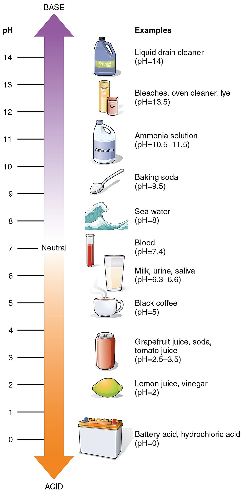

pH measures how many free hydrogen ions (H⁺) are floating in a fluid — the more H⁺, the more acidic. Your blood must stay locked near 7.4, so the body leans on buffers. Push the pH around and see.
The pH scale & the ions
7.0pHNeutral
balanced H⁺ and OH⁻
Push it around
📷 Reference image
A real labeled figure to compare with the interactive above.

pH, Acids, Bases & Buffers — OpenStax, CC BY 3.0 (via Wikimedia Commons)